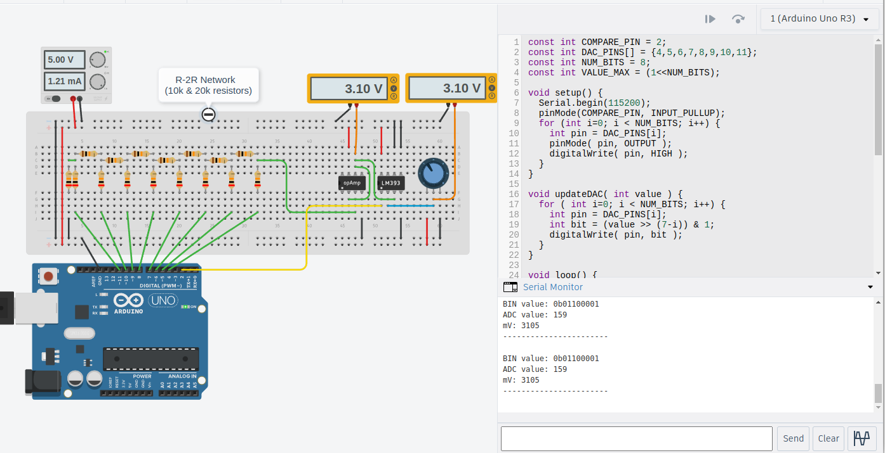

การใช้บอร์ด Arduino เลียนแบบการทำงานของวงจร Successive Approximation ADC#
บทความนี้กล่าวถึง หลักการทำงานของ Successive-Approximation (SAR) ADC ตัวอย่างการเขียนโค้ด Arduino Sketch และการใช้บอร์ด Arduino Nano เพื่อสาธิตหลักการทำงานของวงจร ADC ประเภทนี้
Keywords: Arduino Uno / Nano, MCP4725 DAC, Successive Approximation ADC, SAR ADC, R-2R DAC
▷ หลักการทำงานของ Successive Approximation ADC#
วงจร ADC (Analog-to-Digital Converter) ทำหน้าที่แปลงสัญญาณอินพุตแบบแอนะล็อก ซึ่งเป็นแรงดันไฟฟ้าในช่วงที่กำหนดไว้ เช่น 0V ถึง VREF (แรงดันอ้างอิงของวงจรสำหรับสัญญาณแอนะล็อก) ให้เป็นข้อมูลตัวเลขจำนวนเต็ม มีความละเอียดนับตามจำนวนบิตของข้อมูล เช่น ถ้ามีความละเอียด 10 บิต ก็จะได้ค่าในช่วง 0..1023 แต่ถ้ามีความละเอียด 12 บิต ก็จะได้ค่าในช่วง 0..4095 เป็นต้น
วงจร ADC มีหลายประเภท เช่น
- Flash ADC / Parallel ADC
- Successive-Approximation (SAR) ADC
- Dual-Slope ADC
- Sigma-Delta ADC
ชิปไมโครคอนโทรลเลอร์ส่วนใหญ่ ถ้ามีวงจร ADC อยู่ภายใน ก็จะเป็นประเภท SAR ADC การทำงานของวงจรประเภทนี้ จะต้องอาศัยวงจรอินพุตที่เรียกว่า Sample-and-Hold (S/H) โดยใช้ตัวเก็บประจุไฟฟ้าและทรานซิสเตอร์เป็นสวิตซ์ไฟฟ้า (เช่น มอสเฟต) เพื่อให้ระดับแรงดันอินพุตคงที่ในช่วงเวลาที่มีการแปลงเป็นข้อมูลดิจิทัล
วงจรต่อไปนี้เป็นวงจรเพื่อการสาธิตหลักการทำงานของวงจร Sample & Hold
โดยใช้มอสเฟตเป็นสวิตช์ไฟฟ้า (เลือกใช้ BSS123 สำหรับการสร้างวงจรและจำลองการทำงาน)
มีสัญญาณพัลส์ที่มีคาบเป็นสัญญาณควบคุม (V_SAMPLING)
สำหรับการทำงานการเปิดหรือปิดสวิตซ์ด้วยมอสเฟต และมีสัญญาณแอนะล็อกเป็นสัญญาณอินพุตรูปคลื่นไซน์ (V_INPUT)
นอกจากนั้นแล้วยังมีไอซีบัฟเฟอร์ (Voltage Buffer) ในวงจรด้วย
ข้อสังเกต: BSS123 เป็นทรานซิสเตอร์ประเภท N-Channel Enhancement-Mode MOSFET ถ้า (Gate Threshold Voltage) มีค่าอย่างน้อย 2V จึงจะทำให้มอสเฟตทำงานและนำไฟฟ้าได้ดี ในกรณีนี้แรงดันอินพุตจะต้องมีระดับต่ำกว่าแรงดันควบคุมอย่างน้อย 2V สำหรับวงจรสาธิต

รูป: ตัวอย่างวงจร Sample & Hold เพื่อสาธิตและจำลองการทำงาน โดยใช้ซอฟต์แวร์ EasyEDA
ช่วงที่สัญญาณควบคุมเป็น 5V จะทำให้มอสเฟตนำไฟฟ้าได้ดี ("Active") ระหว่างขา D (Drain) และ S (Source) และทำให้ระดับแรงดันอินพุตปรับเปลี่ยนตามแรงดันอินพุตที่มีการเปลี่ยนแปลง แต่ช่วงเวลาที่สัญญาณควบคุมเป็น 0V มอสเฟตจะไม่นำไฟฟ้า ("Off") ดังนั้นแรงดันเอาต์พุตจะไม่เปลี่ยนแปลงตามอินพุต
จากรูปคลื่นสัญญาณจากการจำลองการทำงานของวงจร จะเห็นได้ว่า อินพุตเป็นสัญญาณรูปไซน์ แรงดันอยู่ในช่วง 0V..3V สัญญาณควบคุมเป็นสัญญาณพัลส์และมีแรงดัน 0V หรือ 5V สัญญาณเอาต์พุตบางช่วงจะมีลักษณะคงที่และเป็นขั้นบันได
รูป: ตัวอย่างการจำลองการทำงานด้วย EasyEDA และรูปคลื่นสัญญาณ
แรงดันของสัญญาณอินพุตเมื่อผ่านวงจร S & H แล้ว จะถูกเปรียบเทียบกับแรงดันอ้างอิง โดยใช้วงจรเปรียบเทียบแรงดัน (Analog Voltage Comparator) แรงดันอ้างอิงจะถูกสร้างโดยใช้วงจร DAC (Digital-to-Analog Converter) เพื่อสร้างแรงดันแอนะล็อกสำหรับการตรวจสอบและประมาณค่าแรงดันอินพุต
ในแต่ละรอบของการประมาณค่าและเปรียบเทียบ จะมีการปรับค่าแรงดันอ้างอิงให้เพิ่มขึ้นหรือลดลง จนเข้าใกล้ค่าของระดับแรงดันอินพุต หรือมีผลต่างของแรงดันลดลงตามลำดับจนใกล้เคียงศูนย์
- เริ่มต้นแรงดันอ้างอิงจะเท่ากับ VCC/2 (ครึ่งของของช่วงแรงดันสำหรับการค้นหา)
- ถ้าแรงดันอินพุตมากกว่าแรงดันอ้างอิง ผลการเปรียบเทียบจะได้ค่าบิตเป็น 1 และจะต้องเพิ่มแรงดันอ้างอิงในรอบถัดไป
- แต่ถ้าไม่ใช่ ก็จะได้ค่าเป็นบิตเป็น 0 และลดแรงดันอ้างอิงในรอบถัดไป
- ช่วงแรงดันสำหรับการค้นหาจะแคบลงเรื่อย ๆ ทีละครึ่งหนึ่ง (Halving)
ผลของเปรียบเทียบแรงดันในแต่ละรอบ จะถูกเก็บไว้ในรีจิสเตอร์ที่เรียกว่า SAR การทำงานของวงจรในลักษณะนี้ คล้ายกับการค้นหาข้อมูลที่เรียงแล้วแบบ Binary Search
รูป: บล็อกไดอะแกรมของ SAR DAC
▷ การสาธิตหลักการทำงานของวงจร SAR ADC ด้วยบอร์ด Arduino#
บอร์ด Arduino Uno / Nano ที่มีชิปไมโครคอนโทรลเลอร์ ATmega328P
มีวงจรภายใน ADC เป็นแบบ Successive Approximation ADC
เพื่อใช้ในการอ่านค่าแรงดันแอนะล็อกที่ขาอินพุต เช่น A0-A7 และมีคำสั่ง
analogRead(...) ให้ใช้งาน และได้ค่าตัวเลขที่มีขนาด 10 บิต หรือ 0 ถึง 1023
ถ้าจะไม่ใช้วงจร ADC เพื่อแปลงแรงดันไฟฟ้าของสัญญาณแอนะล็อกให้เป็นข้อมูลดิจิทัล
จะต้องมีวงจรเปรียบเทียบแรงดันไฟฟ้าและวงจร DAC
ดังนั้นจึงได้เลือกใช้โมดูล MCP4725 DAC (I2C, 12-bit resolution) นำมาต่อเพิ่ม และใช้วงจร
Analog Comparator ที่มีอยู่แล้วภายในชิป ATmega328P สำหรับการเปรียบเทียบ
นอกจากนั้นแล้วยังได้เลือกใช้ไลบรารี MCP4725.h
สำหรับการเขียนโปรแกรม Arduino Sketch เพื่อความสะดวกในการใช้งานโมดูล MCP4725
แนะนำให้ศึกษาจากบทความที่เกี่ยวข้องดังนี้
- การเขียนโปรแกรมภาษา C สำหรับ AVR (ATmega328P): ตอนที่ 10
- โมดูล MCP4725 DAC (Digital-to-Analog Converter)
หลักการทำงานของฮาร์ดแวร์และซอฟต์แวร์สำหรับสาธิตการทำงานของ SAR ADC มีดังนี้
- เปิดใช้งานวงจร Analog Comparator ภายในชิป
ATmega328P โดยเลือกใช้ขา AIN0 / PD6 เปรียบเทียบกับขา A0
- แรงดันที่ขา AIN0 / PD6 เป็นสัญญาณอินพุตที่ต้องการแปลงให้เป็นข้อมูลดิจิทัล เช่น มาจากวงจรแบ่งแรงดันไฟฟ้าโดยใช้ตัวต้านทานปรับค่าได้ 10k โอห์ม และมีแรงดันอยู่ในช่วง 0V..+5V
- แรงดันที่ขา A0 ได้จากขาเอาต์พุตของโมดูล MCP4725 DAC ซึ่งใช้แรงดันไฟเลี้ยง VCC=+5V จากบอร์ด Arduino
- สร้างแรงดันอ้างอิงสำหรับการเปรียบเทียบโดยใช้โมดูล MCP4725 DAC ที่เชื่อมต่อกับบอร์ด Arduino Uno / Nano ด้วยบัส I2C (ใช้ขา A4 / A5 ของบอร์ด Arduino สำหรับสัญญาณ SDA / SCL ของบัส I2C)
- ให้แรงดันอ้างอิงเริ่มต้นที่ระดับ VCC/2 และปรับขึ้นหรือลดในแต่ละรอบ เพื่อให้ผลต่างของแรงดันอ้างอิงกับแรงดันอินพุตเข้าใกล้ศูนย์ เนื่องจาก MCP4725 DAC มีความละเอียด 12 บิต ดังนั้นจะมีการเปรียบเทียบแรงดัน และปรับค่าแรงดันอ้างอิงทั้งหมด 12 ครั้ง
- อ่านค่าแรงดันอินพุตที่ขา A0 โดยใช้วงจร ADC ภายในชิป ด้วยคำสั่ง
analogRead(A0)แล้วนำค่าที่ได้ (มีขนาด 10 บิต) มาเปรียบเทียบ
ข้อสังเกต: เนื่องจากแรงดันอินพุตได้จากวงจรแบ่งแรงดัน จึงถือว่าแรงดันอินพุตคงที่ (หากไม่ได้หมุนปรับค่าในช่วงที่มีการแปลงเป็นข้อมูล) ดังนั้นจึงไม่มีการต่อวงจร Sample & Hold
#include "MCP4725.h"
MCP4725 DAC(0x60); // Create an instance of the MCP4725 class.
void i2c_scan() {
int n_devices = 0;
char sbuf[4];
Serial.println( "Scanning I2C bus..." );
Serial.print( " " );
for ( uint8_t col=0; col < 16; col++ ) {
sprintf( sbuf, "%3x", col );
Serial.print( sbuf );
}
Serial.println( "" );
uint8_t addr=0;
for( uint8_t row=0; row < 8; row++ ) {
sprintf( sbuf, "%02x:", row << 4 );
Serial.print( sbuf );
for ( uint8_t col=0; col < 16; col++ ) {
if ( row == 0 && addr<=1 ) {
Serial.print(" ");
} else {
Wire.beginTransmission( addr );
if ( Wire.endTransmission()>0 ) {
Serial.print( " --" );
} else {
sprintf( sbuf, " %2x", addr );
Serial.print( sbuf );
n_devices++;
}
}
addr++;
}
Serial.println( "" );
}
Serial.println( "---------------------\n" );
Serial.flush();
}
void initAnalogComparator() {
// Disable the digital input buffer on AIN0 and AIN1 pins.
DIDR0 |= (1 << AIN0D);
// Compare AIN0 with A0 pins
ADCSRB |= (1 << ACME);
ADCSRA &= ~(1 << ADEN); // Disable ADC
ADMUX = 0; // Select A0 input (0b000..0b111 for A0..A7)
ACSR &= ~((1 << ACD) | (1 << ACBG));
ACSR &= ~(1 << ACIE); // Disable Analog Comparator interrupt
ACSR |= (1 << ACI);
}
void setup() {
Serial.begin(115200);
Wire.begin();
Wire.setClock(400000);
DAC.begin();
i2c_scan();
if ( !DAC.isConnected() ) {
Serial.println( "MCP4725 DAC is not connected!!!" );
}
delay(2000);
}
void loop() {
int16_t value = (1<<12)/2; // VCC/2
int16_t step = value/2;
// Initialize the the Analog Comparator
initAnalogComparator();
for ( int i=0; i < 12; i++) {
// Send a 12-bit value to the MCP4725 DAC.
DAC.writeDAC( value );
// Check the ACO (Analog Output Compare) bit in ACSR.
if (ACSR & (1<<ACO)) {
value += step;
} else {
value -= step;
}
// Reduce the step.
step /= 2; // Halving the step...
}
// Re-enable the ADC.
ADCSRA |= (1 << ADEN);
// Show the results.
Serial.println( String("DAC output (12b): ") + DAC.readDAC() );
Serial.println( String("Analog value (10b): ") + (value>>2) );
Serial.println( String("A0 input value (10b): ") + analogRead(A0) );
//Serial.println( String("A1 input value (10b): ") + analogRead(A1) );
Serial.println( F("-------------------------") );
delay(1000);
}
ถ้าเชื่อมต่อสัญญาณแอนะล็อกอินพุต จากวงจรแบ่งแรงดันไปยังขา A1 ก็สามารถใช้คำสั่ง
analogRead(A1) อ่านค่าแรงดันอินพุตเพื่อนำไปเปรียบเทียบได้เช่นกัน
รูป: ตัวอย่างการต่อวงจรทดลองบนเบรดบอร์ด
การวัดสัญญาณด้วยออสซิลโลสโคป (CH1: สัญญาณที่ขา A0 มาจากโมดูล MCP4725 และ CH2: สัญญาณที่ขา AIN0 มาจากวงจรแบ่งแรงดันไฟฟ้า) และข้อความเอาต์พุตที่ได้รับและแสดงผลใน Arduino Serial Monitor มีตัวอย่างดังนี้
รูป: แรงดันอินพุตที่ขา A0 มีค่าใกล้เคียงศูนย์
รูป: แรงดันอินพุตที่ขา A0 เพิ่มมากขึ้น (หมุนปรับค่าตัวต้านทานของวงจรแบ่งแรงดัน) แต่ยังน้อยกว่า 2.5V

รูป: แรงดันอินพุตที่ขา A0 เพิ่มมากขึ้น (อยู่ระหว่าง 2.5V และ 5V)
จากรูปตัวอย่างที่ได้จากการทดลองจริง จะเห็นได้ว่า การแปลงแรงดันอินพุตให้เป็นข้อมูลดิจิทัลโดยใช้วงจรเปรียบเทียบและ
DAC ซึ่งเป็นวิธีแรก จะได้ข้อมูลขนาด 12 บิต ดังนั้นจึงต้องลดจำนวนบิตและความละเอียดลงให้เป็น 10 บิต
แล้วเปรียบเทียบค่าที่ได้จากการแปลงด้วยวงจร ADC ภายใน โดยใช้คำสั่ง analogRead() ซึ่งเป็นวิธีที่สอง
ค่าที่ได้ในแต่ละวิธี ถือว่าใกล้เคียงกัน
▷ การใช้วงจร R-2R DAC และไอซีเปรียบเทียบแรงดัน#
อีกแนวทางหนึ่ง ถ้าไม่ใช้โมดูล MCP4725 DAC (12-bit) และวงจรเปรียบเทียบแรงดันภายในชิป ATmega32P ก็สามารถต่อวงจรบนเบรดบอร์ดดังต่อไปนี้ เพื่อนำมาใช้งานร่วมกับบอร์ด Arduino Nano
- วงจร R-2R DAC (เลือกใช้ค่าความต้านทาน 10k และ 20k โอห์ม) เช่น มีความละเอียด 8 บิต และถ้าใช้แรงดัน VREF=5V จะได้ความละเอียด หรือ แรงดันไฟฟ้าต่อหนึ่งบิต เท่ากับ 5000mV/256 = 19.531mV
- ไอซี OpAmp ทำหน้าที่เป็นบัฟเฟอร์ (Voltage Buffer) สำหรับเอาต์พุตจากวงจร R-2R DAC
- ไอซีเปรียบเทียบแรงดัน (Voltage Comparator IC) เช่น LM393 สำหรับการเปรียบเทียบแรงดัน
- บอร์ดไมโครคอนโทรลเลอร์ Arduino Uno/Nano เพื่อกำหนดค่าเอาต์พุตที่ขาดิจิทัล จำนวน 8 ขา เพื่อควบคุมการทำงานของวงจร R-2R DAC ให้ได้ระดับแรงดันอ้างอิงตามที่ต้องการ
รูป: ตัวอย่างผังวงจรและการจำลองการทำงานด้วย EasyEDA (ยังไม่มีการใช้บอร์ด Arduino) ซึ่งแสดงให้เห็นการทำงานของวงจร R-2R DAC และการเปรียบเทียบแรงดันด้วยไอซี LM393
รูป: ตัวอย่างการต่อวงจรเสมือนจริงโดยใช้ AUTODESK Tinkercad
จากรูปผังวงจร มีการใช้งานขาดิจิทัล 4, 5, 6, 7, 8, 9, 10, 11 (ทั้งหมด 8 ขา) ของบอร์ด Arduino Uno / Nano เป็นเอาต์พุตสำหรับนำไปต่อกับวงจร R-2R DAC และใช้ขาดิจิทัล 2 เป็นขาอินพุต โดยนำไปต่อกับขาเอาต์พุตของไอซีเปรียบเทียบแรงดัน
แนวทางการเขียนโค้ด Arduino Sketch สำหรับวงจรสาธิต มีดังนี้
const int COMPARE_PIN = 2;
const int DAC_PINS[] = {4,5,6,7,8,9,10,11};
const int NUM_BITS = 8;
const int VALUE_MAX = (1<<NUM_BITS);
void setup() {
Serial.begin(115200);
pinMode(COMPARE_PIN, INPUT_PULLUP);
for (int i=0; i < NUM_BITS; i++) {
int pin = DAC_PINS[i];
pinMode( pin, OUTPUT );
digitalWrite( pin, HIGH );
}
}
void updateDAC( int value ) {
for ( int i=0; i < NUM_BITS; i++) {
int pin = DAC_PINS[i];
int bit = (value >> (7-i)) & 1;
digitalWrite( pin, bit );
}
}
void loop() {
int value = VALUE_MAX/2;
int step = value/2;
String result = "0b";
for (int i=0; i < NUM_BITS; i++) {
updateDAC(value);
if ( digitalRead(COMPARE_PIN) ) {
result += "1";
value -= step;
} else {
result += "0";
value += step;
}
step /= 2; // Halving the step...
}
uint32_t mV = value*5000ul/VALUE_MAX;
Serial.println( String("BIN value: ") + result );
Serial.println( String("ADC value: ") + value );
Serial.println( String("mV: ") + mV );
Serial.println("-----------------------\n");
delay(100);
}

รูป: ตัวอย่างผลการจำลองการทำงานด้วย AUTODESK Tinkercad
▷ กล่าวสรุป#
บทความนี้นำเสนอ หลักการทำงานของวงจร Successive Approximation (SAR) ADC (หรือวงจรแปลงสัญญาณแอนะล็อกให้เป็นข้อมูลด้วยวิธีการประมาณค่าแบบสืบเนื่อง) และตัวอย่างการใช้บอร์ด Arduino Uno / Nano และโมดูล MCP4725 DAC (12-bit) หรือวงจร R-2R DAC (8-bit) ร่วมกับไอซีเปรียบเทียบแรงดัน พร้อมตัวอย่างโค้ดเพื่อสาธิตหลักการทำงานของวงจร SAR ADC
This work is licensed under a Creative Commons Attribution-ShareAlike 4.0 International License.
Created: 2024-01-09 | Last Updated: 2024-01-10